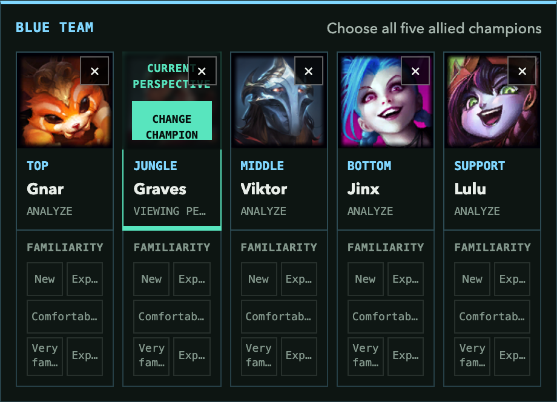
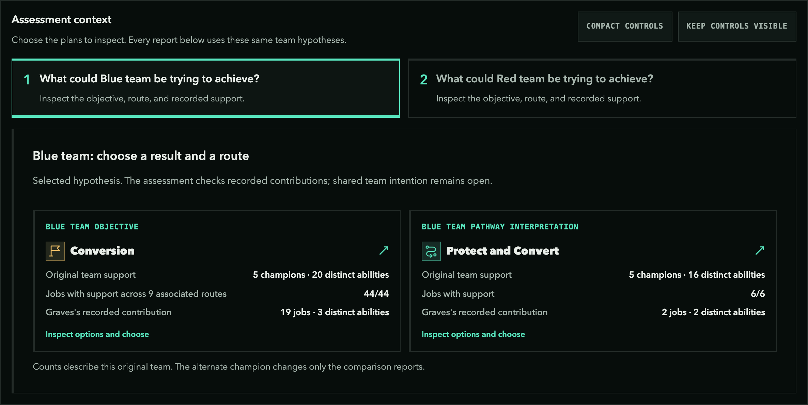
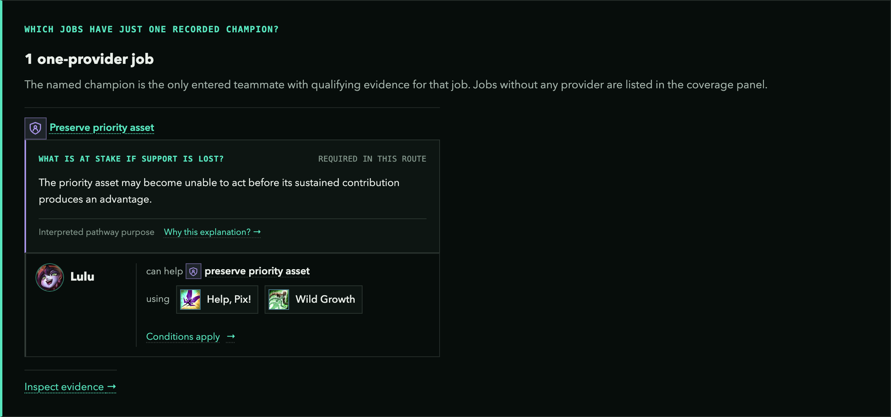
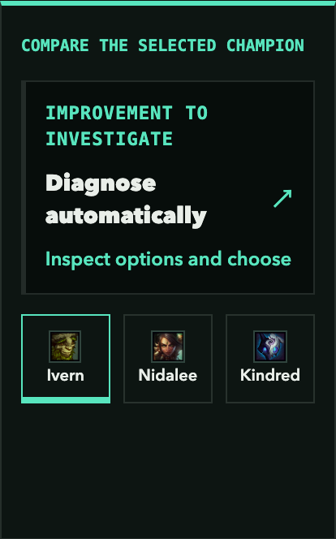
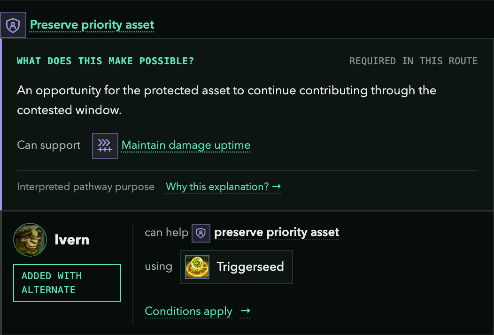
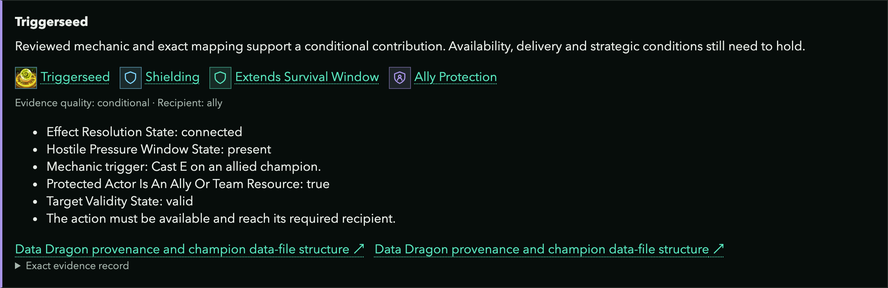

Gnar finds an opening near Dragon. Jinx cannot follow safely, and Lulu is too far away to protect her. In Five Good Champions Can Still Make a Bad Team, that failed handoff showed why damage, control, and protection need to connect.
Before the next draft, your team has a narrower question: would replacing Graves give this plan another useful way to protect Jinx? Composition Decision Lab can help you inspect the recorded dependencies and compare that change. This is a planning exercise for two potential lineups. The lab assesses structural support and its conditions; it does not simulate the Dragon fight.
Work through five steps: keep the situation fixed, state the plans, inspect the current dependency, compare one replacement, and audit the conclusion. The link at the end opens the complete setup so you can repeat the exercise.
1. Set the Question and the Two Teams
Keep the original Blue lineup:
 Top: Gnar
Top: Gnar Jungle: Graves
Jungle: Graves Mid: Viktor
Mid: Viktor Bottom: Jinx
Bottom: Jinx Support: Lulu
Support: Lulu
For this exercise, give Red a fixed lineup too:
 Top: Renekton
Top: Renekton Jungle: Lee Sin
Jungle: Lee Sin Mid: Ahri
Mid: Ahri Bottom: Kai'Sa
Bottom: Kai'Sa Support: Nautilus
Support: Nautilus
Blue still wants to force Red away, preserve enough health and position to remain in river, and take Dragon. We are investigating protection around Jinx's attack window. A second source of protection might matter if the plan currently concentrates that work on Lulu.
In Composition Decision Lab, open Analyze a composition, enter these teams, and click Graves in Blue's roster. His Jungle slot becomes the slot being compared. Keep the other four allies and all five opponents fixed. The original roster remains available while the lab previews an alternative.
Select the champion whose slot you want to compare
{kind=link}

Open full-size image ↗Click Graves in the Blue roster. The current-perspective marker identifies the Jungle slot being compared. Red stays fixed as Renekton, Lee Sin, Ahri, Kai'Sa, and Nautilus; its roster sits beside this cropped view.
Captured from Composition Decision Lab using this article's saved setup. Pictured controls are part of the image. Open the editable comparison at the end of the guide.
Write the decision before comparing champions: “Does another Jungle choice reduce our dependence on Lulu for protecting the priority asset, while retaining support for the rest of the route?”
2. Choose the Plans You Are Testing
Under Assessment context, use these selections:
| Team | Objective | Pathway interpretation |
|---|---|---|
| Blue | Conversion | Protect and Convert |
| Red | Conversion | Breach and Remove |
Blue's interpretation fits the question we brought from the article: preserve the important damage source, use its attack time, and convert the resulting advantage. Red's interpretation gives us a hypothesis to inspect about reaching and removing a priority target.
These are selected hypotheses. The champion lists alone do not establish either team's intent. The lab can trace recorded contributions and opposing relationships against the selected routes. It cannot establish that Red will choose a particular entrance or that either team will coordinate its execution. Keep these selections unchanged for this comparison. If you change the route and the champion together, you will be answering a different question.
Set the result and route before reading the reports
{kind=link}

Open full-size image ↗The Blue tab shows Conversion and Protect and Convert. Click either card to change it. Use the Red tab to check Conversion and Breach and Remove. The support counts belong to the original roster.
Captured from Composition Decision Lab using this article's saved setup. Pictured controls are part of the image. Open the editable comparison at the end of the guide.
3. Find the Dependency Worth Changing
Read Where does this team have only one recorded provider? In the current model, the job Preserve priority asset, which requires Ally Protection, has one qualifying champion provider in this Blue lineup: Lulu. Her two recorded methods are Help, Pix! and Wild Growth. That is two methods on one champion. They still depend on Lulu being able to provide the relevant help when and where it is needed.
Find the champion carrying this protection job
{kind=link}

Open full-size image ↗In the one-provider report, follow Preserve priority asset to Lulu and her two methods. The Conditions apply button opens their support records. Two abilities here still depend on the same champion.
Captured from Composition Decision Lab using this article's saved setup. Pictured controls are part of the image. Open the editable comparison at the end of the guide.
This finding narrows the investigation. We can now ask whether another pick introduces an additional provider for this exact job. It does not establish that Lulu will fail, that a second provider is necessary in every match, or that every protection method is interchangeable.
Before looking at replacements, also read Where does this contribution matter? and What does the rest of this composition cover and leave open? Those panels keep Graves's existing responsibilities and the rest of the route in view. The desired improvement must be assessed alongside what the substitution removes.
Checkpoint: “Our inspection target is concentration on Lulu for Ally Protection. We will compare that dependency while checking the other modeled jobs.”
4. Compare One Replacement
Under Compare the selected champion, leave Improvement to investigate on Diagnose automatically. With this setup and the current model, the diagnosis chooses Reduce provider concentration and displays Ivern, Nidalee, and Kindred. Ivern is selected automatically. These suggestions are a structural inspection shortlist; their ranking leaves matchup suitability and execution to be assessed.
Inspect the suggested alternative in Graves's slot
{kind=link}

Open full-size image ↗Ivern is highlighted in the three-candidate shortlist. Selecting another portrait changes the preview while keeping Graves in the original roster. The improvement card controls what the suggestions investigate.
Captured from Composition Decision Lab using this article's saved setup. Pictured controls are part of the image. Open the editable comparison at the end of the guide.
Inspect Ivern in What changes under the alternative pick? The preview replaces Graves in Blue's Jungle slot. Ivern's Triggerseed adds a recorded method for Ally Protection, alongside Lulu's two methods.
Read the added method behind the provider count
{kind=link}

Open full-size image ↗Under What does this choice add?, find Preserve priority asset. This is the contribution behind the table's extra provider: Ivern using Triggerseed. Open Conditions apply to inspect why it qualifies and what still needs to hold.
Captured from Composition Decision Lab using this article's saved setup. Pictured controls are part of the image. Open the editable comparison at the end of the guide.
| What this setup reports | Graves version | Ivern version |
|---|---|---|
| Modeled jobs with conditional support | 6 of 6 | 6 of 6 |
| Recorded Ally Protection providers | 1: Lulu | 2: Lulu and Ivern |
| Recorded Ally Protection methods | 2 | 3 |
| Jobs with only one recorded provider | 1 | 0 |
These counts were checked against the current application model. The route contains five required jobs and one desirable job, Reset a failed engagement. “Six modeled jobs” includes that desirable reset job. Conditional support means a qualifying contribution is recorded; it leaves availability, delivery, and coordinated execution to be checked.
The useful difference is specific: the protection job has another recorded champion provider while all six modeled jobs retain some conditional support. This is a reason to investigate Ivern for the stated priority. Provider counts cannot establish how much damage either composition deals or whether two sources of protection will be independently usable.
Open What does this comparison establish? and inspect the other changes before preferring the replacement. Shared coverage can remain unchanged while contributing abilities and their conditions change. Graves's damage contribution, jungle matchup, and the team's familiarity with Ivern still belong in the decision. The lab's structural counts do not settle those questions.
5. Audit the Evidence and Choose What to Practice
Use Inspect evidence, Conditions apply, or What was checked beside the relevant finding. Follow Ivern's Triggerseed contribution through its mechanical tool and effects to the Ally Protection job. Do the same for Lulu's methods. Check the required recipient and conditions instead of stopping at the method count.
Follow Triggerseed through the evidence chain
{kind=link}

Open full-size image ↗After Conditions apply opens the evidence page, follow Source: Triggerseed to this record. Read the mechanic-to-job chain, the ally recipient, and the conditions below it. The source links and Exact evidence record let you continue the audit.
Captured from Composition Decision Lab using this article's saved setup. Pictured controls are part of the image. Open the editable comparison at the end of the guide.
| Audit question | Why it can change the decision |
|---|---|
| Can this method help the intended ally? | A recorded effect on a different recipient may leave Jinx's need unresolved. |
| Can the protection arrive when Jinx needs it? | Availability, reach, and timing determine whether the recorded method can serve this assignment. |
| Do the two providers depend on the same access? | Shared positioning requirements can leave both unable to help at once. |
| What methods and conditions disappear with Graves? | Retaining coverage of a job can still change how the team would perform it. |
| Which opposing relationships still need checking? | An exposure record identifies a conditional interaction to inspect; it does not establish a successful counter. |
Now return to the failed Dragon handoff. If Lulu and Ivern are both separated from Jinx by the same contested approach, another protection provider leaves that immediate problem unresolved. The comparison becomes useful when it changes preparation: who stays within reach of Jinx, what they preserve for her attack window, and what the team does if that support cannot arrive.
A useful conclusion for this exercise is: “Ivern is worth testing when a second recorded protection source is our priority. Before preferring that lineup, we need to establish a usable protection assignment and decide whether the changes to Graves's other responsibilities are acceptable.” If those checks fail, keep the Graves version in the comparison and revise the preparation or the requirement you want the next pick to improve.
The output is a reasoned next experiment. Practice the formation with the chosen protection assignment, or compare another displayed candidate while keeping the same teams and route hypotheses. Name the condition that would change your preference. That connects the composition report back to the plan your team is trying to carry out.